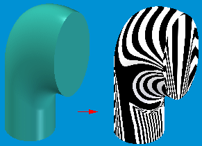

Show Zebra Stripes command
Displays zebra stripes on the model. Zebra stripes are useful for visualizing the curvature of surfaces to determine if there are surface discontinuities and inflections.
You must also shade the active window using the Shaded or Shaded With Visible Edges commands to display zebra stripes.

-
Zebra Stripes are solid bands of color overlaid on top of a single face or set of surfaces:
-
Displayed at regular spacing, controlled by the user.
-
Follow the contour of the relevant faces.
-
-
One might ask: “How do these 'stripes' help?”
-
Smooth stripes are manifested by smooth, continuous surfaces (that is, no cusps or wrinkles).
-
Stripes with sharp bends would indicate abrupt changes in surface curvature (that is, a discontinuity).
-
Discontinuities will make manufacturing more difficult.
-
Metallic Parts: Machining will be more complex.
-
Molded Parts: Injection of plastic may be difficult into discontinuous areas.
-
-
You can control colors, spacing and the method of mapping the stripes using the Zebra Stripes Settings.
-
Benefits
-
Striping gives quick indication of continuous edges between faces.
-
Dynamic; users can see changes in real-time.
-
Non-rollback edit method.
How do I
Display zebra stripes on a partDisplay curvature shading on a model
Visualize a surface
Learn more
Evaluating surfacesEvaluating and repairing foreign data
Look up more details
Zebra Stripes Settings commandShow Curvature Shading command
Curvature Shading Settings command
Curvature Shading Settings Dialog Box
Show Draft Face Analysis command
Draft Face Analysis command bar
Draft Face Analysis dialog box
Draft Face Analysis Settings command
Surface Visualization command
Surface Visualization Settings dialog box